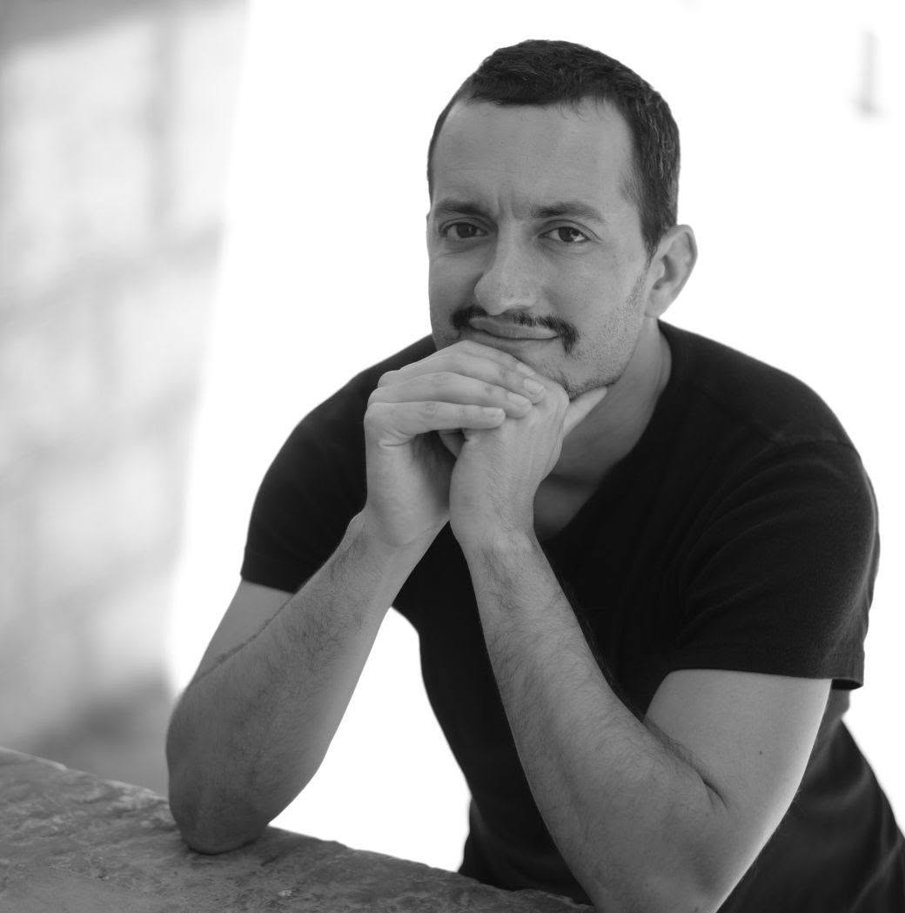

Pianista de 35 años de edad, combina su labor docente, como profesor de Repertorio con Piano para Instrumentos en el Conservatorio Superior de Música de Sevilla, y su actividad como concertista.
Ha colaborado con orquestas como la Cordats Symfonie Orkest de Rotterdam, Orquesta Promúsica, Orquesta y Coro New Filarmónica, y, recientemente, con la Orquesta Filarmónica de Málaga, de la que forma parte de la bolsa de Piano, Celesta y Órgano, bajo la dirección de maestros como Manuel Bustos, Elisa Gómez, Kristian Kalsen y Susanna Mälkki.
A lo largo de su carrera, su trayectoria ha sido reconocida con 24 galardones en concursos nacionales e internacionales entre los que destacan los primeros premios en: Málaga Crea-Muestra Jóvenes Intérpretes (2019), Concurso Nacional Río Órbigo (2008), I Certamen Nacional de Música de Cámara Visitación Magarzo (2008), XXVI Certamen Nacional Marisa Montiel (2006) y X Certamen Nacional Ángeles Reina (2000). También ha sido finalista en el Concurso de Música de Cámara de Roma (2019).
Ha realizado actuaciones en escenarios nacionales e internacionales de Alemania, Francia, España, Holanda, Inglaterra y Portugal.
Desde 2019 es miembro de la Asociación de Compositores e Intérpretes Malagueños (ACIM), participando asiduamente en festivales dedicados a la música contemporánea. Ha tocado obras de compositores coetáneos como Zulema de la Cruz, Consuelo Díez, Javier Torres Maldonado, Tomás Marco y Juan Luis Montoro.
Dentro del ámbito de la música de cámara, forma parte del Masan Dúo (clarinete y piano) y del Trío Destenay (clarinete, oboe y piano), agrupaciones con la que participa asiduamente en festivales y ciclos de conciertos de ámbito nacional.
Su perfil profesional se completa con su experiencia como clavecinista y la realización del bajo continuo, junto a agrupaciones y orquestas de música antigua e instrumentos históricos, como L´Accademico Formato, primera orquesta barroca profesional residente en Málaga.